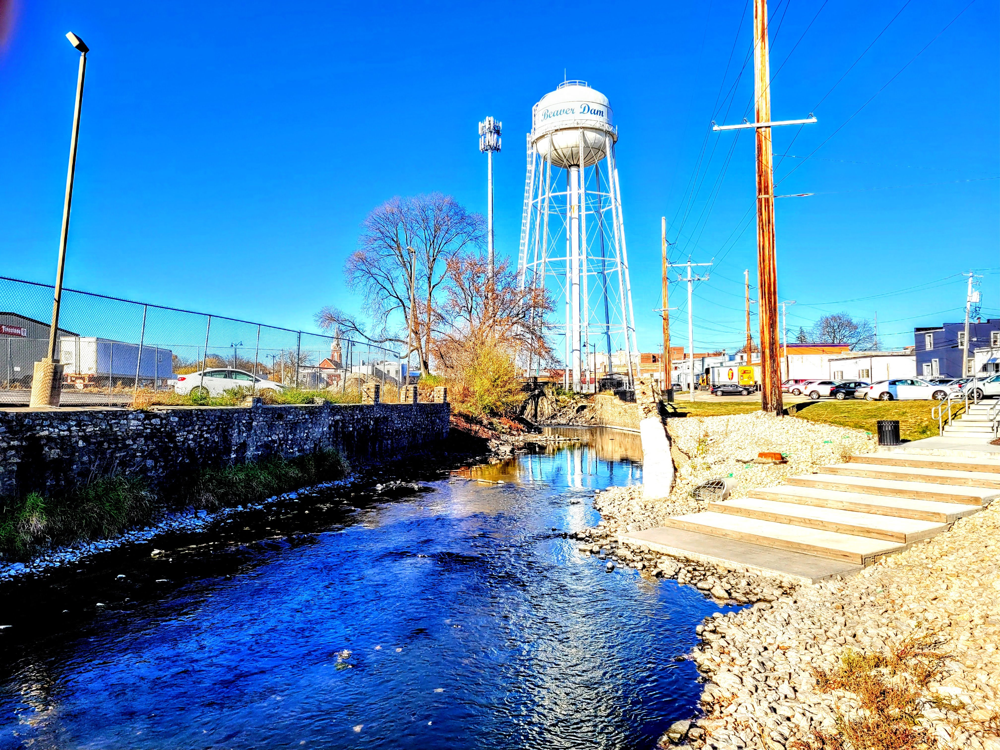
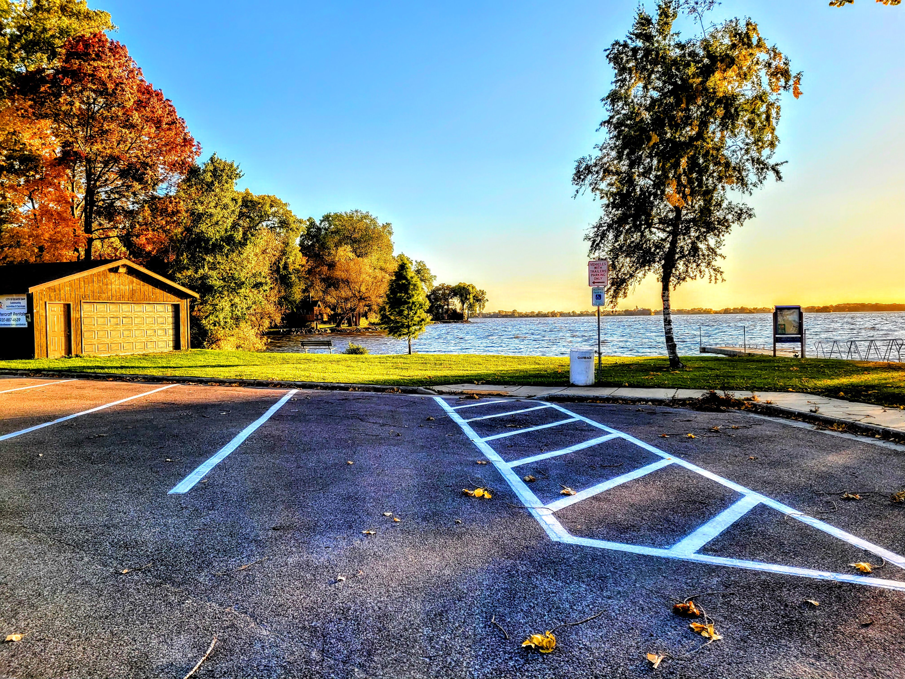
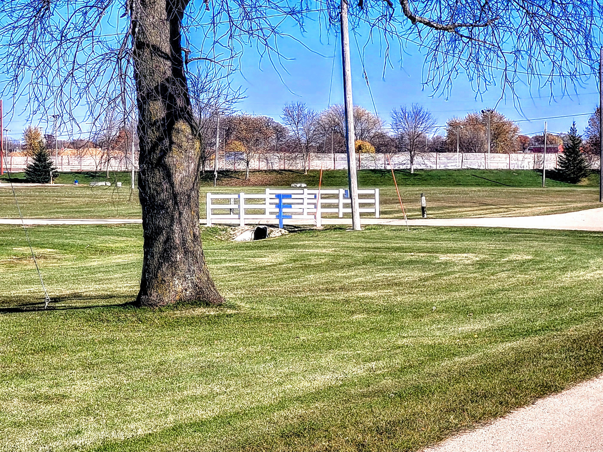

I want to talk about Beaver Dam, Wisconsin. Not because I have clients there yet. Not because I grew up there. But because I was doing research on small Wisconsin cities a few weeks ago and I kept coming back to it. Every time I looked at the local business landscape, I saw the same pattern I see everywhere: a real, living, functioning community with a bunch of businesses that are basically invisible online. And every time I see that gap, my brain goes to the same place. That is a wide open opportunity for whoever decides to walk through it first.
So let me tell you about Beaver Dam. And then let me tell you why I think the digital situation there is both a problem and honestly kind of exciting.
First, some actual facts about Beaver Dam
Beaver Dam sits in Dodge County, about an hour north of Milwaukee and 45 minutes northeast of Madison. It has a population of roughly 16,443 people as of the 2024 Census estimate. That is not a tiny hamlet. That is a real city with a real downtown, a real lake, real manufacturing, and real restaurants where real people go for lunch on a Tuesday.
The city was founded in 1841, named after the literal beaver dams that early settlers found on the river. Which is about as Wisconsin as it gets. You named your town after rodent architecture and nobody questioned it. Respect.
The economy is legit. According to the U.S. Census Bureau's County Business Patterns data, Dodge County has hundreds of business establishments concentrated in and around Beaver Dam, employing tens of thousands of workers across manufacturing, healthcare, retail, and services. The city has a Seagrave fire truck factory that has been building fire apparatus there since 1963. It has a HSHS St. Agnes Hospital. It has a Walmart distribution center. It has Kwik Trip, because obviously it has Kwik Trip, every Wisconsin city has Kwik Trip. And beyond the big anchors, it has exactly the kind of local business ecosystem that makes a small city feel like home: the hardware store, the family dentist, the one really good Mexican restaurant, the auto shop where the owner knows your name.
Beaver Dam Lake, right there on the edge of town, is the 16th largest lake in Wisconsin. Fishing, boating, waterfront cabins, summer tourism. The Dodge County Fairgrounds draws people in from the whole region every year. The city has a real identity, real amenities, and real community investment. This is not a struggling town. It is a functional, reasonably thriving small city that happens to be in the same boat as most functional, reasonably thriving small cities in the Midwest when it comes to the internet.

Photo by Downspec / Wikimedia Commons (CC BY-SA 4.0)
The digital situation is what you would expect
I spent some time Googling around Beaver Dam like a stranger would if they were passing through or had just moved there. "Best restaurant Beaver Dam WI." "HVAC repair Beaver Dam." "Plumber near Beaver Dam Wisconsin." You know what the results look like? A mix of outdated Yelp pages, Facebook profiles that were last updated in 2021, Google Business listings with no photos, and a few websites that look like they were built by someone who had just discovered FrontPage and was genuinely excited about it.
I am not dunking on Beaver Dam specifically. This is not a Beaver Dam problem. This is a universal small-city problem. The national chains and the big regional businesses have websites and SEO teams. The local businesses, the ones that have been there for thirty years and actually matter to the community, often do not. They rely on word of mouth. They rely on regulars. They rely on the fact that everyone in a city of 16,000 kind of knows where everything is already.
The problem with that strategy is that it works great until it does not. New residents move in and they search online before they ask a neighbor. Visitors drive through and pull up Google Maps. People move away and send their relatives recommendations but say "just Google them" without realizing Google barely knows they exist. The word of mouth network that sustained a business for decades starts to develop holes, and the online presence that should fill those holes is not there.
According to BrightLocal's Local Consumer Review Survey, 98% of consumers used the internet to find information about local businesses in 2023. Ninety-eight. That is not a niche behavior anymore. That is just how people find things. And according to Google's own data, more than 800 million "near me" searches happen every single month in the United States. When someone is in Beaver Dam, or driving toward Beaver Dam, and they search "breakfast near me" or "tire shop near me," whatever comes up first wins. The question is who that is going to be.
The competition bar is genuinely low
Here is the part that I find interesting. When I look at Beaver Dam's digital landscape, I do not see a saturated market. I see the opposite. I see service categories where maybe one or two businesses have even a halfway decent online presence, and everyone else is operating in a kind of digital shadow. That is not scary. That is an opening.
Compare that to trying to rank for "plumber Milwaukee." You are up against businesses with full-time marketing staff, Google ad budgets, review generation systems, and years of domain authority. The competition is fierce and the cost to compete is high. Now try "plumber Beaver Dam WI." The landscape is completely different. A well-built website with some basic local SEO, a fully filled-out Google Business Profile, and twenty solid reviews from real customers would put a business at or near the top of those results within a few months. Not years. Months.
According to a 2022 survey by the Small Business Administration and various small business research groups, approximately 29% of small businesses in the United States still had no website at all. And of the ones that did, a significant portion had sites that were not mobile-friendly, not fast-loading, and not optimized for local search. In a smaller market like Beaver Dam, that percentage is likely even higher because the urgency to invest in digital has felt lower when the business has been fine without it.
That is the gap. Most businesses in Beaver Dam are not competing online because most businesses in Beaver Dam have not had to yet. The town is small enough that reputation and relationships have carried them. But consumer behavior has shifted around them, and the businesses that recognize that shift first are the ones that are going to own their category in local search for the next decade.

Photo by Downspec / Wikimedia Commons (CC BY-SA 4.0)
What a business in Beaver Dam actually needs
Let me be concrete. Not generic. What does a plumber in Beaver Dam, or a dentist in Beaver Dam, or a restaurant in Beaver Dam actually need to start showing up where people are looking?
A real website. Not a Facebook page. Not a Wix template that someone made in an afternoon and forgot about. A proper website that loads fast, works on a phone, clearly explains what the business does and where it operates, and has the right local keywords built into the content. It does not need to be a 50-page behemoth. A well-built five-page website with clear service descriptions, location information, contact details, and a few paragraphs about the business is enough to leapfrog most of the current competition in a market like this.
A complete Google Business Profile. This is free and it matters enormously for local search. A fully filled-out profile with real photos, accurate hours, a description that actually says what the business does and where, and regular updates signals to Google that the business is alive and active. Shocking how many businesses have a half-completed profile sitting there like an abandoned construction site. Fill it out. Add photos. Answer the questions people have already asked on it. Respond to reviews.
Reviews. According to BrightLocal, 76% of consumers say they regularly read online reviews for local businesses. And Google's algorithm uses review quantity, recency, and diversity as local ranking signals. Twenty good reviews from real customers in Beaver Dam beats zero reviews from a business that has been open for twenty years. Just ask. Most happy customers will leave a review if someone actually takes thirty seconds to ask them and sends a direct link. They are not going to do it unprompted because they have lives. But ask nicely and most people will help out.
Local content. This is the one that almost nobody does and it is one of the highest-leverage things a small business can invest in. Write about what you do in the context of where you are. A roofing company that has an article on their website about "what Dodge County homeowners need to know about ice dams" is going to rank for searches that a generic roofing website never will. A restaurant that posts about their Dodge County Fair week specials is going to get found by people Googling the fair. You have local knowledge that no national brand can replicate. Use it.
A town with some real character worth knowing about
I should mention: Beaver Dam is not just a generic Midwest city on a spreadsheet. It has some genuinely interesting history. Fred MacMurray, the actor famous for "My Three Sons" and a bunch of classic Hollywood films, was born in Beaver Dam in 1908. So was Brian Donlevy, a Hollywood character actor who showed up in about a hundred films from the 1930s through the 1960s. The town produced actual movie stars. That is not nothing.
Wayland Academy, a private college prep school, has been operating in Beaver Dam since 1855. Older than the Civil War. The Dodge County Historical Society has been preserving the area's history for decades. There is a real arts and cultural scene, a brewing company, an ice cream parlor that has probably made more friends in that city than any business has a right to make, and a community that shows up for itself in the ways that small cities do best.
There is a reason people choose to live in Beaver Dam instead of commuting into Madison or Milwaukee and living somewhere bigger. It has the things that actually make a place feel like home: the lake, the community events, the familiarity, the small business owners who know your name. That is genuinely valuable and it is exactly the kind of story that translates well online when someone tells it right.

Photo by Downspec / Wikimedia Commons (CC BY-SA 4.0)
The "near me" problem is real and it is already here
I want to come back to this because it is the part that most small-town business owners have not fully processed yet. The "near me" search behavior is not a future trend. It is the present reality. Google reported that "near me" searches have grown over 200% in the past few years, and that the majority of them happen on mobile devices, from people who are actively looking to make a decision right now.
Think about what that means for a business in Beaver Dam. A family moves to town from Madison. They need a dentist. They do not ask their neighbor yet because they have not met their neighbor. They search. A couple is driving through on their way to the Dells and they decide to stop for lunch. They search. A contractor from out of town needs a local materials supplier. They search. A new employee at the Seagrave plant is looking for an auto shop they can trust. They search.
These are not hypothetical customers. These are real people with real purchase intent who are going to spend money somewhere in Beaver Dam. The business that shows up in those searches gets that money. The business that does not show up does not get a chance to even be considered. It is not that the customer chose someone else. It is that the customer never knew the business existed.
According to Google, 76% of people who search for something nearby on their smartphone visit a related business within a day. Seventy-six percent. Within a day. Local search intent is not browsing. It is buying. And the businesses that are visible in those searches have a conversion rate that most digital marketing channels would kill for.
I do not have clients in Beaver Dam. Yet.
I want to be honest here. As of the time I am writing this, Mule Digital does not have a single client in Beaver Dam, Wisconsin. I have not knocked on any doors there. I have not cold-called anyone on Front Street. I am writing this because I looked at the market and saw what I always see in cities like this: a real opportunity sitting unclaimed, waiting for the businesses that are ready to take it seriously.
We built Mule Digital specifically for towns like Beaver Dam. Not for Chicago. Not for Milwaukee. For the cities that the big agencies overlook because they are not big enough to be interesting to a firm with a $10,000 monthly minimum. For the businesses that have been told digital is complicated and expensive and probably not worth it for a city their size. That is not true. It is probably more true in a city their size than anywhere else, because the competition is lower and the returns are faster and more predictable.
If you are a business owner in Beaver Dam reading this, I want to have an honest conversation with you. Not a sales pitch. Not a proposal deck. Just a real conversation about what your online presence looks like right now, what it could look like, and whether the gap between those two things is worth closing. Most of the time it is. And most of the time it is not as expensive or as complicated as you have been led to believe.
The city named itself after beaver dams because beavers build things that last, that reshape the environment around them, that do the slow unglamorous work that makes a place more livable. I do not know if the founders were going for that metaphor. I kind of doubt it. But I like it anyway. The businesses in Beaver Dam that are ready to build something real online are going to reshape the competitive landscape of their category in that city for years. The bar is low. The opportunity is real. All it takes is someone actually doing it.
That is what we are here for. Start a conversation with us and let us see what we can build.